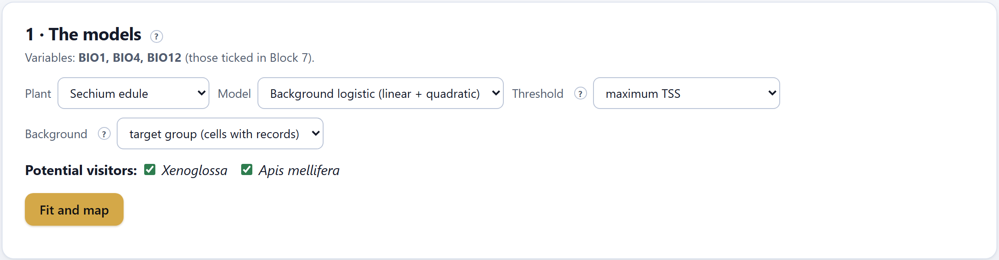
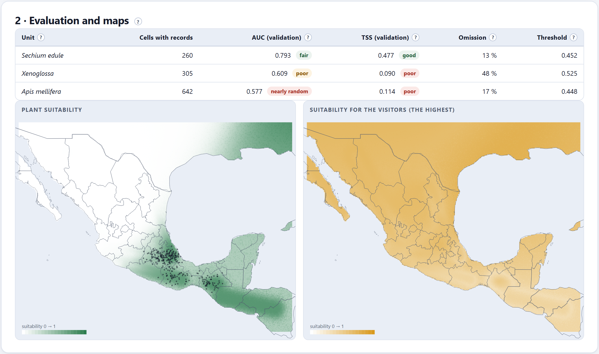
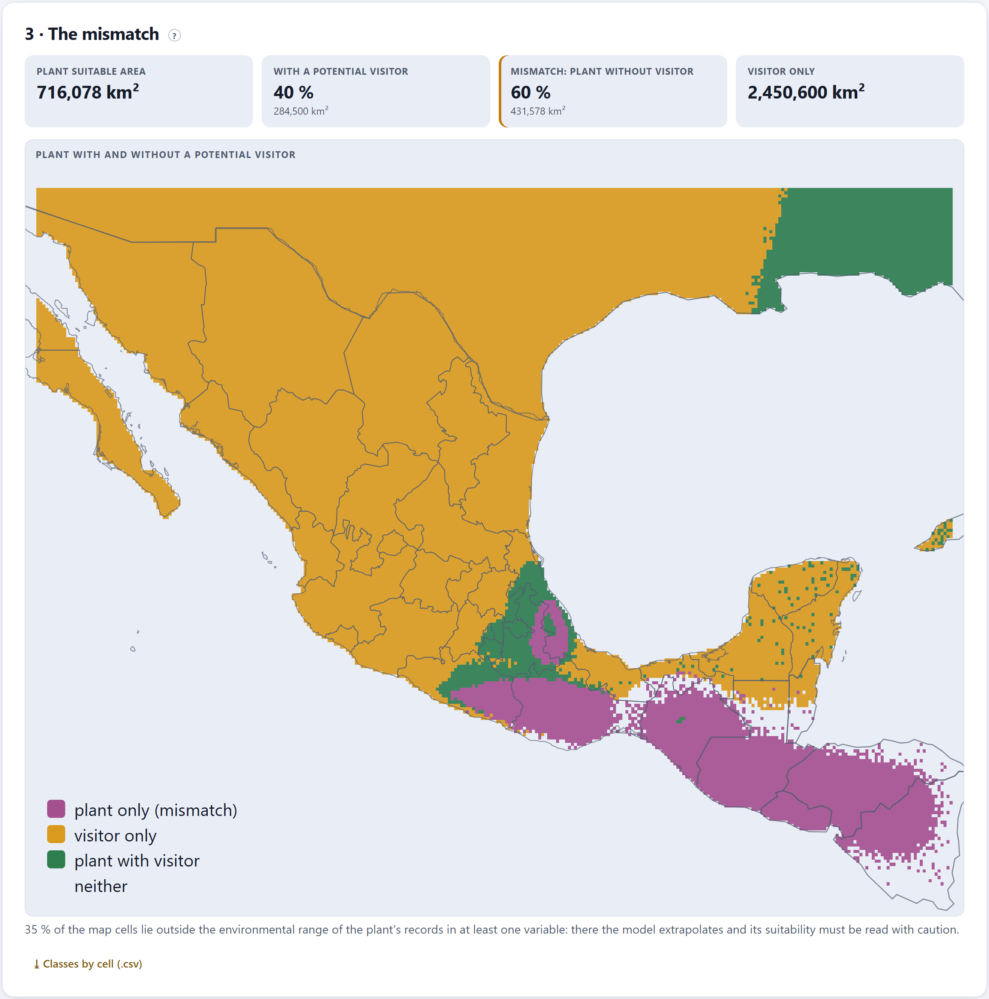
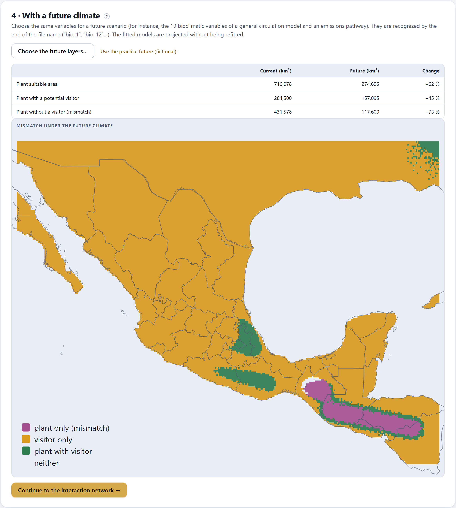

Where the environment is suitable for the plant and for each visitor, and where the plant is left without any potential visitor. Three suitability models —envelope, Mahalanobis and background logistic— assessed by cross-validation; the map of the plant with and without a visitor; and, with future climate layers, how that mismatch changes.
Block 7 compared the niches in environmental space; this block takes them back to the map. With a suitability model for the plant and another for each potential visitor, every cell falls into one of four classes: suitable for both, for the plant only, for the visitor only or for neither. The cells for the plant only are the mismatch: the part of the plant’s range that would depend on other visitors, or that would be left without pollination if the relationship were exclusive (Schweiger et al. 2008). Under a future climate, the mismatch may grow or shrink (Kerr et al. 2015).
The variables are the ones ticked in Block 7 (they are listed at the top of the card). If there are not at least two layers loaded, the block asks you to go and get them. In this chapter they are the practice layers —BIO1, BIO4 and BIO12—, and everything said about their maps is about an invented climate.

| Model | How it decides suitability |
|---|---|
| Background logistic (the default) | Compares the cells with records against background cells with linear and quadratic terms of the standardized variables and a ridge penalty, fitted by iteratively reweighted least squares. It is the most flexible (Phillips et al. 2009; Elith et al. 2011). |
| Mahalanobis distance | How far a cell is from the climatic center of the records, taking into account how the variables covary; suitability is the upper tail of χ² at that distance (Farber and Kadmon 2003). |
| Bioclimatic envelope | Suitable is whatever falls within the range of the records on every variable, with more weight toward the center; the simplest and the most conservative (Nix 1986). |
| Control | What it does |
|---|---|
| Threshold | The value from which a cell is declared suitable: maximum TSS (the one that best separates records from background), 10th percentile of presences (leaves out the 10% least suitable records) or minimum presence (includes every record; the widest) (Liu et al. 2005). |
| Background | Target group (the cells with records of any unit of the study: it corrects for sampling bias) or the whole area. It only counts in the logistic model and in the evaluation. |
| Potential visitors | The visitors that count for the mismatch. Unticking one asks what would happen without it. |
| Fit and map | Fits the model of the plant and of each ticked visitor, evaluates them and draws the maps. |

Each model is evaluated by four-fold cross-validation: it is fitted with three quarters of the cells with records and tested with the remaining quarter, four times. That way the numbers say how well the model predicts records it did not see.
| Column | What it says | Chayote · Xenoglossa · Apis |
|---|---|---|
| Cells with records | The presences of the model (one per layer cell). | 260 · 305 · 642 |
| AUC (validation) | The probability that a cell with a record receives higher suitability than a random background cell (Swets 1988). | 0.793 · 0.609 · 0.577 |
| TSS (validation) | Sensitivity + specificity − 1 with the chosen threshold; 0 is chance (Allouche et al. 2006). | 0.477 · 0.090 · 0.114 |
| Omission | The fraction of validation records that fall outside the suitable area. | 13% · 48% · 17% |
| Threshold | The suitability value of the cut. | 0.452 · 0.525 · 0.448 |
| AUC < 0.6 · 0.6–0.7 · 0.7–0.8 · 0.8–0.9 · > 0.9 | nearly random · poor · fair · good · excellent. |
| TSS < 0.2 · 0.2–0.4 · 0.4–0.6 · > 0.6 | poor · fair · good · very good. |
| If a visitor has a nearly random AUC | then its map does not discriminate: it is usually a generalist that lives in almost every climate of the area (the honey bee) or a unit with very scattered records. Its high suitability everywhere will erase the mismatch; say that this is due to lack of discrimination, not to a shared niche. |
With presence-only data, AUC depends on the size of the background: compare models with the same background, not against numbers from other papers (Lobo et al. 2008).
In Figure 8.2, the chayote model is fair and its map follows the humid southern and Gulf slope of the practice layers; those of the visitors hardly discriminate, and the map on the right —the highest suitability of the two in each cell— comes out high almost everywhere. The plant’s map also shows a real phenomenon of these models: high suitability in the northeast, outside the area of the records, where the model extrapolates to climates it did not see.

| Tile | What it says | In the practice study |
|---|---|---|
| Plant suitable area | The surface of the cells suitable for the plant, in km² on the sphere. | 716,078 km² |
| With a potential visitor | The fraction and the area where it is also suitable for at least one visitor. | 40% · 284,500 km² |
| Mismatch: plant without visitor | The fraction and the area where it is suitable only for the plant. | 60% · 431,578 km² |
| Visitor only | The area suitable for some visitor but not for the plant. | 2,450,600 km² |
Below the map, the app says what fraction of the cells lies outside the environmental range of the plant’s records in at least one variable: “35 % of the map cells lie outside the environmental range of the plant's records in at least one variable: there the model extrapolates and its suitability must be read with caution.” ⤓ Classes by cell (.csv) downloads, as mismatch_cells.csv, each cell with its coordinates, the suitability of the plant and its current and future class.
The map rests only on environmental suitability: it does not consider dispersal, barriers, land use, the behavior of the visitors or other visitors that are not on the list. A large mismatch tells you where it is worth looking in the field for what visits the plant; it does not say that the plant is not pollinated there.
| If the mismatch changes a lot with the threshold | then show it with two rules (maximum TSS and 10th percentile of presences) and use the same one for the plant and the visitors. |
| If the visitor models have a poor TSS | then draw no conclusion about the mismatch: the visitors’ map is not reliable. |
| If a large part of the map is extrapolated | then restrict the interpretation to the area where there are records and say so in the methods. |
The fourth card applies the models already fitted, without refitting them, to the same variables computed for a future period under a climate model and an emissions pathway. Choose the future layers… takes the files, which are recognized by the end of their name (“bio_1”, “bio_12”…) and must be the same variables in use. For practice, Use the practice future (fictional) loads an invented future, warmer and drier, which only works with the practice layers.

The table compares, in km², the suitable area of the plant, the area with a potential visitor and the mismatch, today and in the future, with its change in percent. The Block 10 report takes it up again with the names of the future files.
A single climate model is one of many possible projections. For a paper, repeat the projection with three or more climate models and two emissions pathways, and report the range of the change. The app projects one set of layers at a time: choose the future layers again for each combination and write down the result.
| Message | What it means and what to do |
|---|---|
| Environmental layers are needed | Load at least two layers in Block 7. |
| First fit the models with the current climate | The future is projected with the models already fitted: press Fit and map first. |
| Future layers are missing for: … | The future layers must be the same variables in use and have the same ending in their name (“bio_1”…). |
| The practice future only goes with the practice layers of Block 7 | With your real layers, choose your own future layers. |
| N % of the map cells lie outside the environmental range… | There the model extrapolates. Read it with caution and say so in the methods. |
| A unit with very few cells with records | Cross-validation needs records in each fold; with very few, the model and its evaluation are fragile. Merge species into their genus or widen the area. |